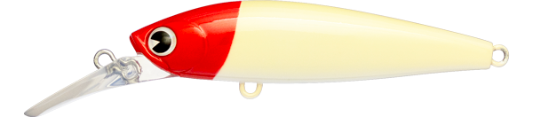
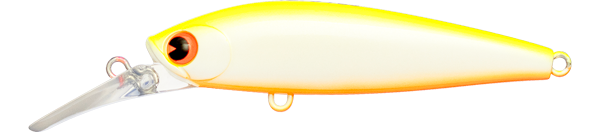
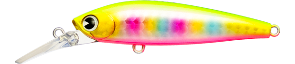
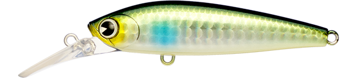
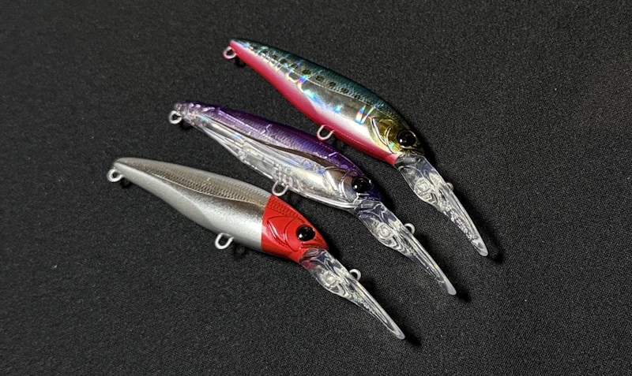

アタル70S
（ataru 70S）
アタル70S（ataru 70S）はima（アイマ）のシンキングシャッドです。
基本性能を極限まで高めた“王道シンキングシャッドの頂”。バイブレーションのようにタイトでピッチの早いウォブンロールがスローからファストまで破綻せず、ロングリップとは思えない飛行安定性で、ストラクチャーゲームからオープンエリアのミドルレンジサーチまで、昼夜・魚種を問わず活躍します。

画像出典:ima公式HP
スペック
- メーカー
- ima（アイマ）
- タイプ
- シンキング（シャッド）
- 全長
- 70mm
- 自重
- 11g
- レンジ
- 50〜180cm
- フック
- #5
- リング
- #3
- アクション
- ウォブリング
- ターゲット
- シーバス
- 価格
- 1,870円（税込）
- 発売
- 2025年3月
▼今すぐチェック

アタル70Sの特徴
スローからファストまで、どの速度でも“仕事をする”70mmの王道シャッド
-
タイトでピッチの早いウォブンロール
バイブレーションのようなタイトでピッチの早いウォブンロールが、スローからファストまでバランスを保って機能する。巻き速度を選ばずに使えるのが強み。
-
ロングリップとは思えない飛行安定性
ロングリップのシャッドながら飛行姿勢が安定していて、狙ったポイントへ正確に投げやすい。オープンエリアでも距離を出してサーチできる。
-
レンジ50〜180cmのミドルレンジを幅広くカバー
レンジは50〜180cm。シャローランナーでは届かない中層を、ストラクチャー周りからオープンエリアまで幅広く探れる。
アタル70Sの使い方
基本はただ巻き。スローからファストまで動きが破綻しないので、まずはミディアムで巻いて反応を見て、速度を変えながら魚の反応する速さを探ります。
シンキングなので、着水後のカウントダウンでレンジを調整可能。ストラクチャー周りでは際をタイトに通し、オープンエリアでは遠投してミドルレンジを広く引くのが基本の組み立てです。
アタル70Sの得意な状況
河口・港湾・ボートなど、表層より少し下の中層に魚がいる状況が最大の出番。
橋脚や岸壁などのストラクチャー攻略から、オープンエリアのミドルレンジサーチまでこなせるので、「レンジが絞り切れないときの1本目」としても使いやすいルアーです。昼夜を問わず活躍します。
ワンポイント
シャッドは巻き速度でレンジが変わりやすいので、同じレンジを通したいときは巻き速度を一定に保つのがコツです。
反応が無いときは、カウントダウンを長めにして一段下を通したり、ストップ＆ゴーで食わせの間を作ったりして変化を付けましょう。
70mmクラスのシャッド・ミノーとの使い分け
| モデル | 全長／自重 | 得意な場面 |
|---|---|---|
| アタル70S | 70mm／11g | レンジ50〜180cm。ストラクチャーからオープンエリアまでこなす王道（本記事のモデル） |
| クミホン70S | 70mm／9g | 壁際・橋脚などのピンスポットを撃つピン撃ちシャッド |
| マイヨール70SL | 70mm／8.5g | コンパクトなシルエットで食わせ重視の場面に |
同じ70mmクラスでも、オールラウンドに中層を探るならアタル70S、ピンスポットを撃つならクミホン70S、とコンセプトで使い分けるとローテーションが組みやすくなります。
人気カラー
アタル70Sは通常カラー12色に加え、特別企画カラーも展開。シーバス狙いでオススメのカラーを厳選して紹介します。

RH（レッドヘッド）定番のレッドヘッド。濁りやナイトでもシルエットを出しやすい。

CBP（チャートバックパール）チャートの背中とパールのボディで視認性・アピールとも高い。

玉彩弐imaを代表する「玉彩」系のカラー。アピールが強く視認性も良い。

カワベイト河川のベイトを意識したナチュラル系。
画像出典:ima公式HP
アタル70Sに似ているルアー
-
 クミホン70S
ブルーブルー
詳細はこちら＞
クミホン70S
ブルーブルー
詳細はこちら＞
全長70mm・自重9gのピン撃ちシャッド。同じ70mmクラスのシンキングシャッドで、壁際や橋脚などのピンを撃つ場面での持ち替えに。
-

マイヨール70SL アピア 詳細はこちら＞全長70mm・自重8.5gのシンキングミノー。同じ70mmクラスで、ローテーションの選択肢になる1本。
-
 マイヨール80S
アピア
詳細はこちら＞
マイヨール80S
アピア
詳細はこちら＞
全長80mm・自重15gの急速潜行ディープダイバー。最大2.5mと、アタル70Sよりさらに深いレンジを攻めたいときに。